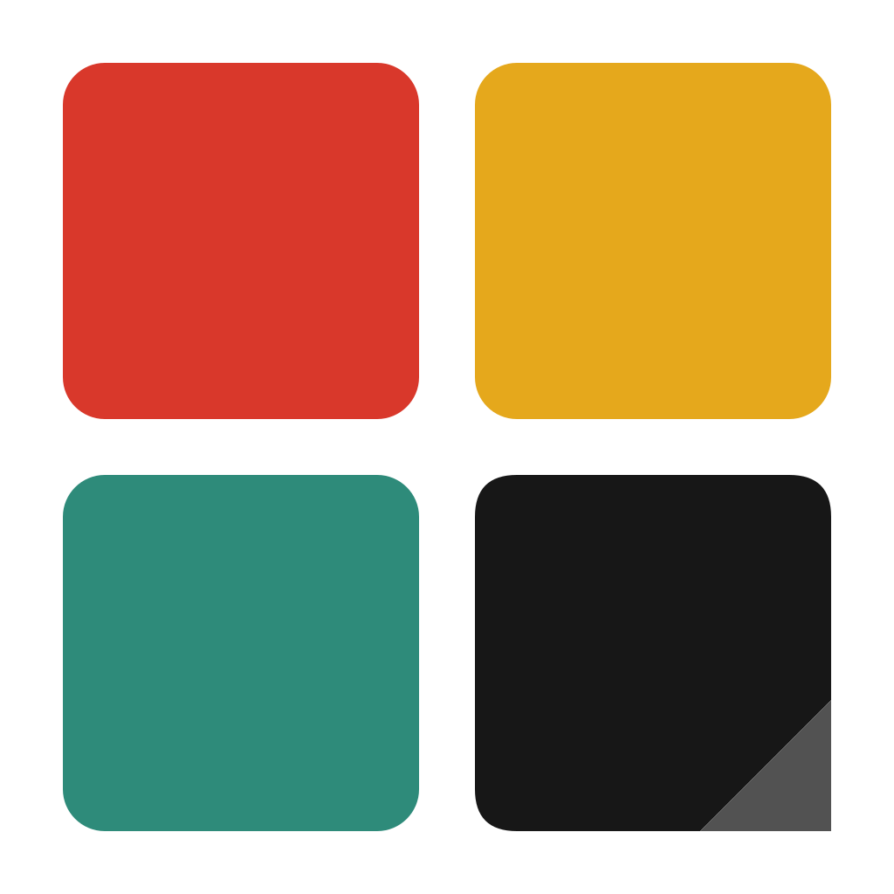
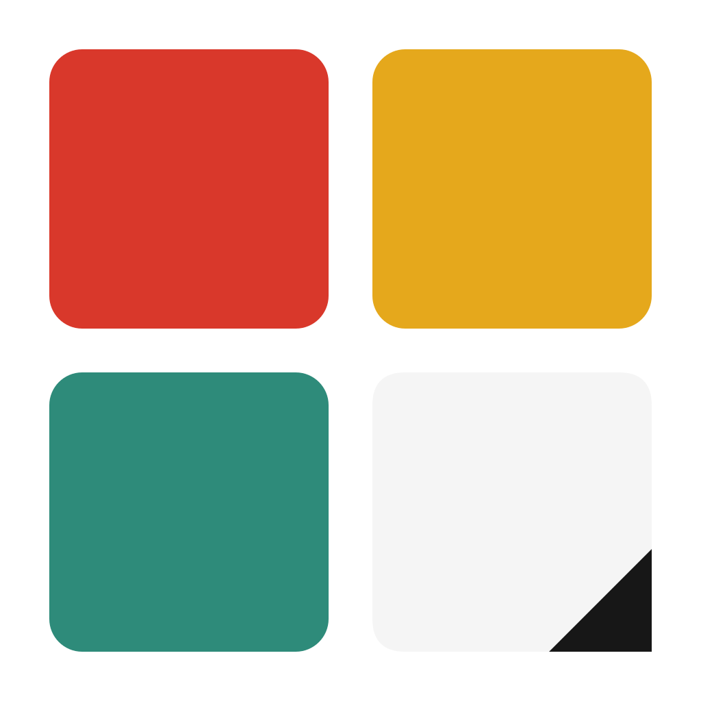

이미지를 빠르게 보기
확대/축소, 가로·세로·화면 맞춤, 이동, 회전, 반전을 지원합니다. 폴더 안 이미지를 앞뒤로 넘기고, 썸네일 목록과 격자 화면에서 원하는 이미지로 바로 이동할 수 있습니다.


AraViewWindows 11용 가벼운 오프라인 이미지·만화 뷰어.
Windows 11 (x64) 전용 · EUPL-1.2
확대/축소, 가로·세로·화면 맞춤, 이동, 회전, 반전을 지원합니다. 폴더 안 이미지를 앞뒤로 넘기고, 썸네일 목록과 격자 화면에서 원하는 이미지로 바로 이동할 수 있습니다.
CBZ/ZIP 아카이브를 단일, 좌→우, 우→좌, 웹툰 보기로 읽을 수 있습니다. ComicInfo.xml을 읽어 표지와 읽기 방향을 맞추고, 마지막으로 본 페이지부터 이어서 볼 수 있습니다.
부드럽게, 픽셀 보존, 자동 중에서 고릅니다. 자동 모드는 보수적으로 픽셀 아트를 감지하고, 불확실하면 부드럽게 표시합니다.
모든 조작을 키보드로 할 수 있습니다. Ctrl+K 명령 팔레트로 기능을 검색해 실행하고, 단축키는 설정에서 바꿉니다.
EXIF 정보 보기, 전체화면, 이미지를 PNG로 클립보드에 복사, 최근 파일 목록, 이름 변경, 휴지통 이동을 쓸 수 있습니다.
네트워크는 설정이나 명령 팔레트에서 직접 업데이트를 확인할 때만 씁니다.
HEIC/HEIF/PSD/TGA/DDS/EXR은 읽기 전용 미리보기입니다(JPEG로 변환해 표시). PSB는 지원하지 않습니다.
모든 단축키는 설정에서 다시 지정할 수 있습니다.
웹툰 모드에서는 이전/다음 이동과 스크롤로 바뀌고, 다이얼로그나 입력창에 포커스가 있을 때와 격자 화면이 열려 있을 때는 동작하지 않습니다.
단일 보기에서만 동작합니다. 정지 GIF와 웹툰/양쪽 보기에서는 원래 애니메이션으로 재생됩니다.